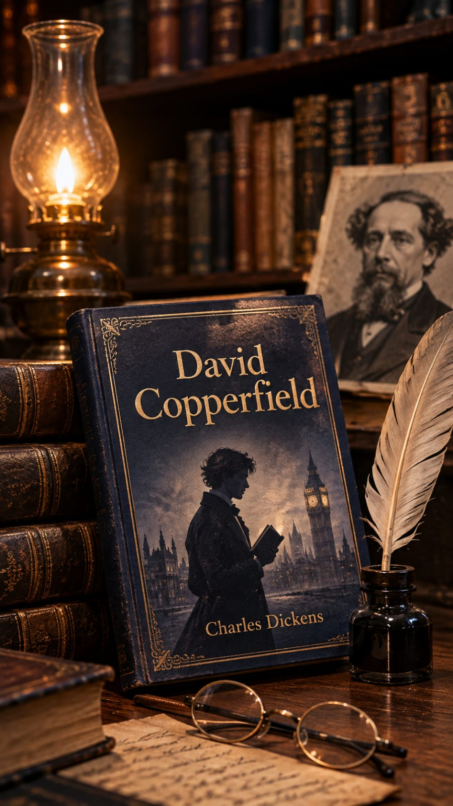

Watch this video first, then read the chapters below. It explains the full summary in an easy way.
David born Friday 12 night Blunderstone Suffolk unlucky. Father died 6 months before white gravestone. Mother Clara young pretty childish. Miss Betsey Trotwood stiff strange nose against glass. Wanted girl Betsey Trotwood Copperfield heir. Doctor: Ma'am it's a boy. She swung hat at doctor head and left forever. Detailed: Friday twelve night unlucky, white grave, Clara young afraid alone, Betsey belief girl godmother heir, swing hat helmet garden never back.
Mother pretty hair Peggotty dark eyes red cheeks. Garden-bell gentleman black hair Mr Murdstone deep voice. David jealous pushed hand. Every Sunday church. Peggotty unhappy can't live by herself. Yarmouth offer sea boats fishermen Ham to play mother stay Mrs Grayper. Cart day excited mother crying gate Murdstone stopping feelings.
Boat-House: Old boat upside down beach. Mrs Gummidge white apron widow husband drowned complaining kind. Little Emily beautiful shy father drowned looked after Mr Peggotty. Mr Peggotty rough but kind-hearted: You'll find us rough but kind-hearted. Ham big strong loves Emily. Beach shells starfish love sword promise. Shock: Peggotty: What do you think? You've got a father! A new one! Trembled white grave dead. Mother with Murdstone Control yourself always! Bedroom changed far away dog black hair angry doghouse symbol.
Locked 5 days after bite Peggotty secret food. Promise: never forget me I'll look after mother I won't leave her. Mother pale red eyes how could you hurt anyone I love wicked tears bread. Goodbye for own good Clara! Certainly my dear Jane God bless you controlled goodbye.
Salem House boarding. Steerforth 6 years older I'll do best for you. Creakle sternest severe cane like soldier battle ignorant brute never laid hand on Steerforth Miss Creakle in love. Speech: Come fresh punish with cane. Steerforth protects useful friend. Visitors for Copperfield! Tungay Mr Peggotty Ham huge seafood Mrs Gummidge boiled supper ill boy caned. Daily struggle frosty mornings cold dark boiled roast bread butter dirty books tears caning ink counting months weeks days coach Yarmouth home.
Strange feeling going home no longer home dream never dream again. Carrier gate mother singing low holding baby He is your brother I wish died then. Murdstones out happy dinner round fire arms round mother as used to ten wheels go to bed. Next morning I beg pardon sorry How long holidays month Oh baby incident Good heavens Clara boy has got baby never touch No doubt right Jane mother dared not not favourite cold bedroom overcoat kitchen comfortable forbidden sullen ordered like dog obeyed Must not servants kitchen end Clara warning voice cart mother calling gate alone holding baby up dreams silently last happy image.
Ch1 - I Am Born: David born Friday 12 night Blunderstone, father died, mother Clara young. Miss Betsey wanted a girl, got a boy, swung hat and left forever.
Ch2 - Life Begins to Change: Mr Murdstone black hair deep voice appears. David jealous. Peggotty takes him to Yarmouth. Mother crying at gate.
Ch3 - Everything Different: Boat-house, Mrs Gummidge, Little Emily, Mr Peggotty rough but kind-hearted, Ham loves Emily. Shock: You've got a father! A new one! Mother with Murdstone - Control yourself always!
Ch4 - Disfavour: Locked 5 days, Peggotty promise: never forget me, I'll look after mother. Mother pale, wicked tears, controlled goodbye - Certainly my dear Jane.
Ch5 - Salem House: Steerforth 6 years older protects David. Creakle sternest cane brute, never touches Steerforth. Visitors: Mr Peggotty, Ham, seafood. Struggle: cold, caning, counting months.
Ch6 - My Holidays: Home no longer home. Mother holding baby - He is your brother. Baby incident - Good heavens Clara boy has got baby. Sullen, ordered like dog. Final gate: mother alone holding baby up, dreams silently.
Theme: Loss of innocence, cruelty vs kindness, home vs no home.
You finished Chapters 1-6
Amazing work! Keep going 💪
Answer in 2 lines only - light
Dear Mr. Michael,
I am really lucky to be your student.
Thank you for your patience and for always believing in us.
You make learning easy and fun.
We appreciate you a lot.
You are not just a great teacher, you are a kind person.
Thank you, Mr. Michael.
- Jonathan